Day02
今日目标
1.能够了解模块化的相关规范
2.了解webpack
3.了解使用Vue单文件组件
4.能够搭建Vue脚手架
5.掌握Element-UI的使用
1. 前端工程化
1.1 模块化的相关规范
1.1.1 模块化概述
传统开发模式的主要问题
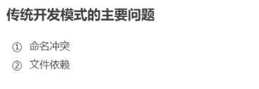
- 命名冲突：多个js文件中的同名变量会冲突
- 文件依赖：js文件之间无法相互引用问题
通过模块化解决上述问题
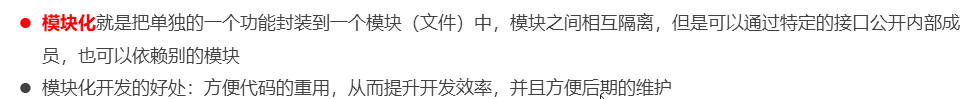
1.1.2 浏览器模块化规范
介绍
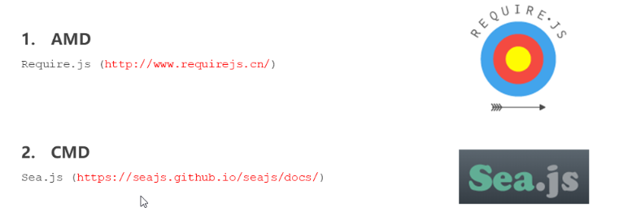
这两个模块化规范，已经落伍，我们不再学习
1.1.3 服务器端模块化规范
介绍：
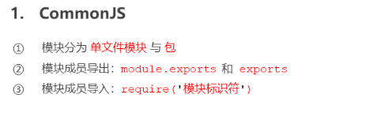
- 浏览器和服务器都有各自的模块化规范
- 但是还不统一，我们重点看统一的规范
1.1.4 大一统的模块化规范-ES6模块化
介绍：
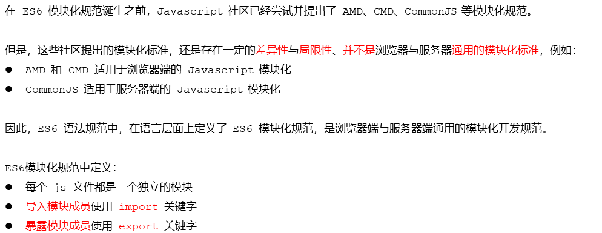
我们重点学习ES6模块化
1.2 Node.js中通过babel体验ES6模块化
- node默认支持commonjs这种服务器端的模块化
- 但是对于ES6模块化支持的不是太好，所以需要使用第三方工具babel
- babel是一个语法转换工具，可以将高级的有兼容问题的代码，转换为低级的无兼容问题的代码
- node正好不兼容ES6模块化的新语法，所以通过babel来进行转换，做兼容处理
安装babel
打开终端，输入命令：npm install --save-dev @babel/core @babel/cli @babel/preset-env @babel/node安装完毕之后，再次输入命令安装：npm install --save @babel/polyfill注意：如果npm安装上诉包不成功，就使用cnpm但是需要安装cnpm：npm install -g cnpm --registry=https://registry.npm.taobao.org配置babel
xxxxxxxxxx在项目目录中创建babel.config.js文件。编辑js文件中的代码如下：const presets = [["@babel/env",{targets:{edge:"17",firefox:"60",chrome:"67",safari:"11.1"}}]]//暴露module.exports = { presets }创建index.js文件
xxxxxxxxxx在项目目录中创建index.js文件作为入口文件在index.js中输入需要执行的js代码，例如：console.log("ok");使用npx执行文件
xxxxxxxxxx打开终端，输入命令：npx babel-node ./index.js效果：
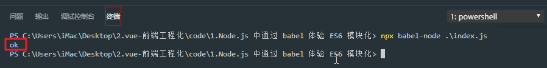
2.ES6模块化语法
2.1 默认导出与默认导入
模块化中有很多数据是需要导入或导出的，我们来看一下如何导入导出
语法：
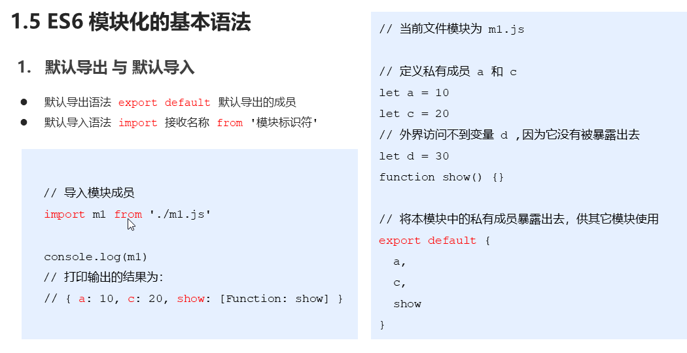
- a和c暴露出去，d没有暴露
- 所以在另一个文件中，导入m1之后，只能使用a和c
- export：导出
- import：导入
代码：
x//m1.jslet a = 10let c = 20let d = 30function show() {console.log('1111111111111')}export default {a,c,show}//index.jsimport m1 from './m1.js'console.log(m1)效果：看不到d，因为我们并没有导出d（暴露d）
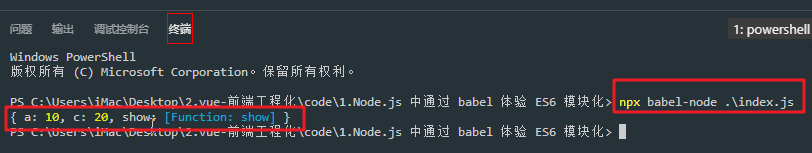
注意：
每个模块中，只允许使用唯一的一次 export default，否则会报错
例如：
xxxxxxxxxx//m1中增加如下代码：export default {d}- 运行：
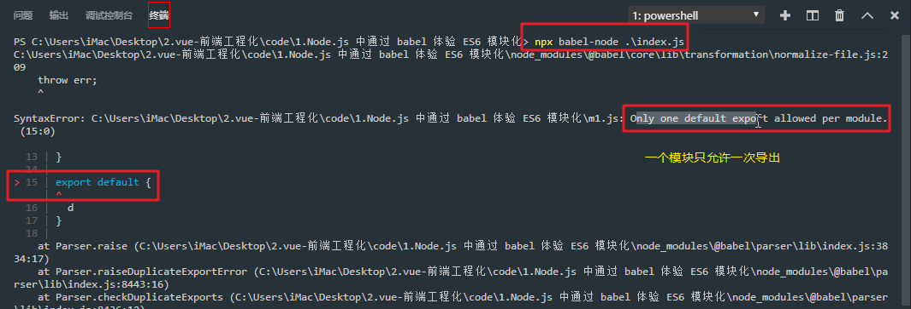
注意：如果m1中没有导出，index.js还是导入并且打印m1，是不会报错的，会输出一个空对象：{}
2.2 按需导出与按需导入
介绍
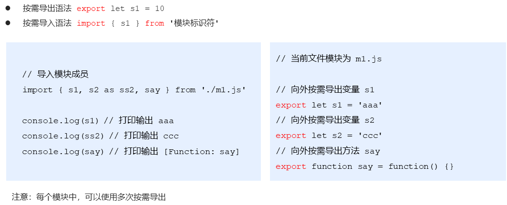
- as 是起别名，起过别名，在使用的时候就只能使用别名
- 按需导入，需要添加{}
代码：
xxxxxxxxxx//m1let a = 10let c = 20let d = 30function show() {console.log('1111111111111')}export default {a,c,show}export let s1 = 'aaa'export let s2 = 'ccc'export function say() {console.log('ooooooooo')}//indeximport m1, { s1, s2 as ss2, say } from './m1.js'console.log(m1)console.log(s1)console.log(ss2)console.log(say)注意：
- import m1，只会导入export default，也就是默认导入的数据
- 按需导出的，只能通过按需导入来使用
效果：
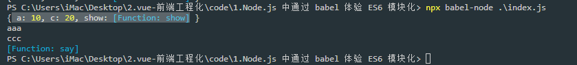
2.3 直接导入并执行模块代码
介绍
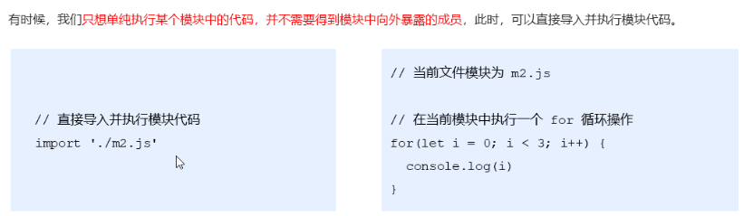
- m2并没有导出任何内容，只是定义了一段代码
- index直接导入了m2整个文件，并没有导入某个，某些数据
代码：
xxxxxxxxxx//m2for (let i = 0; i < 3; i++) {console.log(i)}//indeximport './m2.js'效果：
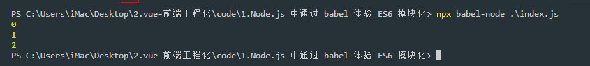
3. webpack
3.1 介绍webpack的作用
当前web开发面临的困境
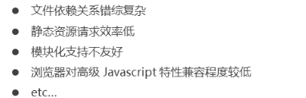
webpack介绍：
- webpack是一个流行的前端项目构建工具（打包工具），可以解决目前web开发的困境。
- webpack提供了友好的模块化支持，代码压缩混淆，解决js兼容问题，性能优化等特性，提高了开发效率和项目的可维护性
- webpack，pack：包裹，包装。理解为web打包工具
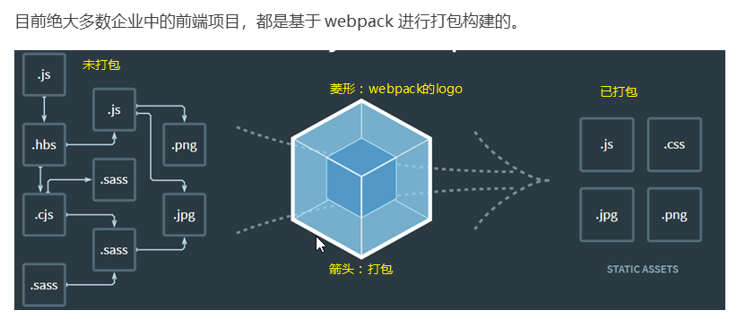
3.2 创建列表隔行变色项目
步骤
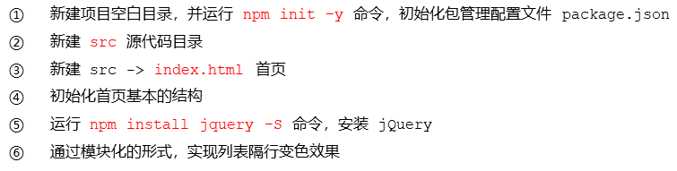
第一步项目名称：webpack_study
- -y 的含义：yes的意思，在init的时候省去了敲回车的步骤，生成的默认的package.json
第四步：页面基本结构：index.html代码
xxxxxxxxxx<body><ul><li>这是第1个li</li><li>这是第2个li</li><li>这是第3个li</li><li>这是第4个li</li><li>这是第5个li</li><li>这是第6个li</li><li>这是第7个li</li><li>这是第8个li</li><li>这是第9个li</li></ul></body>第五步：
- -S：--save，缩写为-S，表示安装的包将写入package.json里面的dependencies
- -D：--save-dev，缩写为-D，表示将安装的包将写入packege.json里面的devDependencies
- -g ：--global，缩写为-g，表示安装包时，视作全局的包。安装之后的包将位于系统预设的目录之下，一般来说
第六步：模块化
xxxxxxxxxx//新建index.js//index.html导入index.js<script src="./index.js"></script>//index.js代码import $ from 'jquery'$(function() {$('li:odd').css('backgroundColor', 'blue')$('li:even').css('backgroundColor', 'lightblue')})最后直接打开index.html，发现index.js第一行代码报错了
import是ES6新语法，浏览器不兼容，所以报错，
那怎么办呢？需要借助webpack
接下来，我们就是来学习webpack
3.3 在项目中安装和配置webpack
webpack可以支持部分的ES6新语法的转换，如果想支持所有的还需要babel的支持（3.5.7会讲）
- 这里的部分，包含import语法
- babel会处理webpack处理不了的新语法
步骤
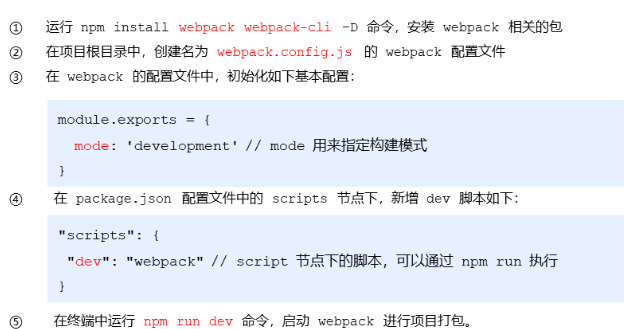
第三步：mode有两种：
- development：开发模式，打包的代码不会压缩和混淆
- production：生产模式（正式上线模式），打包的代码会压缩和混淆
第五步：打包结果：
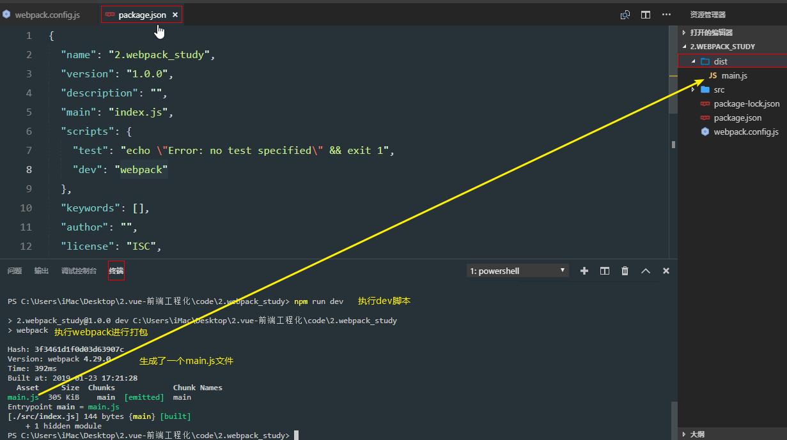
修改导入的js文件
xxxxxxxxxx//index.html中导入main.js<!-- <script src="./index.js"></script> --> //屏蔽index.js<script src="../dist/main.js"></script>效果
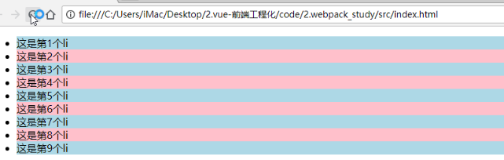
3.4 配置
3.4.1 配置打包的入口与出口
默认的打包入口和出口
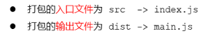
修改默认：
如果不想使用默认的入口/出口js文件，我们可以通过改变 webpack.config.js 来设置入口/出口的js文件，如下：
xxxxxxxxxxconst path = require("path");module.exports = {mode:"development",//设置入口文件路径entry: path.join(__dirname,"./src/xx.js"),//设置出口文件output:{//设置路径path:path.join(__dirname,"./dist"),//设置文件名filename:"res.js"}}__dirname为项目根路径
output的filename：老师改为了bundle.js
3.4.2 配置webpack的自动打包功能
为啥需要自动打包
- 因为修改代码之后，需要重新打包才能看到效果
- 但是如果每次修改代码，都手动执行：npm run dev，太麻烦了
自动打包步骤
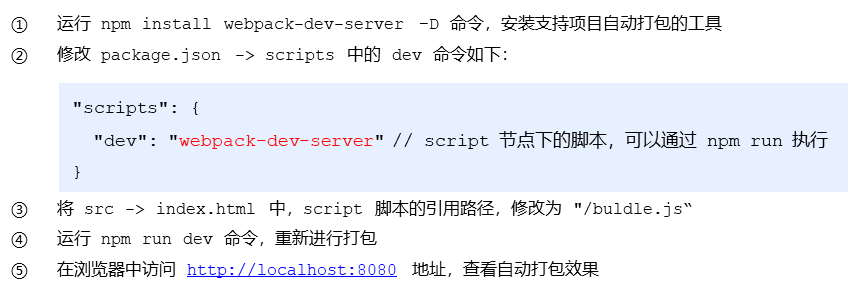
第三步：buldle.js是视频老师配置的打包出口文件
- 根据自己的情况处理 ，自己配置的output的filename如果是res.js那么这里就修改为/res.js
- 并且注意是根路径（为啥后边解释）
第四步：打包效果
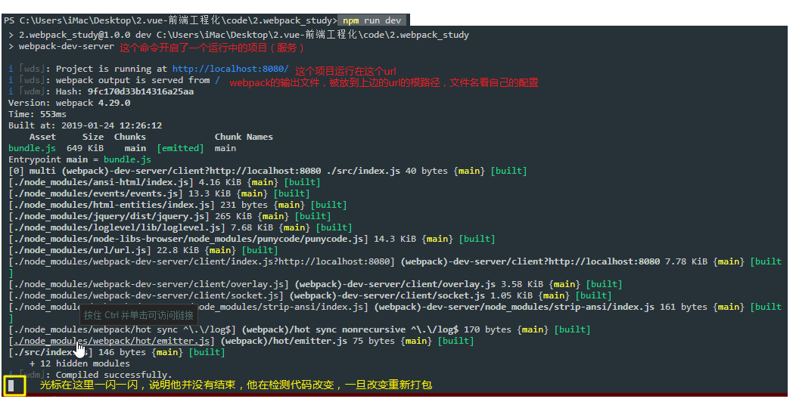
需要注意，打包之后，输出文件bundle.js默认被放到了根路径下
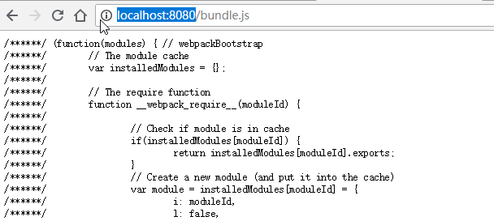
而bundle.js这个文件，只能通过上述url看到，实际的项目根路径是看不到的，他并没有放到实际的硬盘上
注意，使用了webpack-dev-server命令打包之后，只能通过localhost:8080这样的地址访问，直接访问index.html是不行的
访问如下：访问src，自动显示index.html
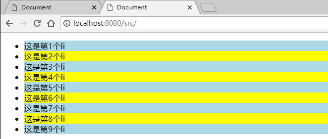
如果直接访问：
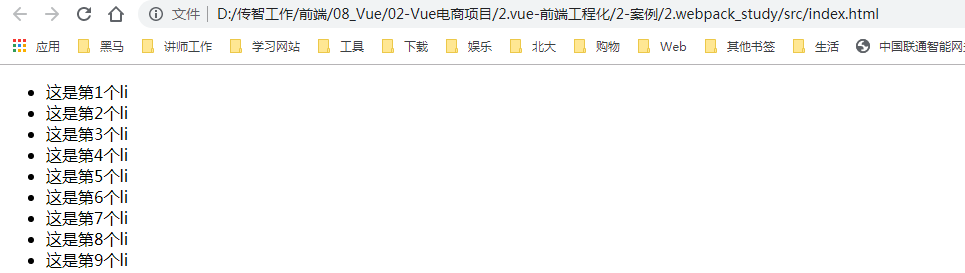
3.4.3 配置html-webpack-plugin生成预览页面
访问8080：看到的是项目中根路径下的所有内容
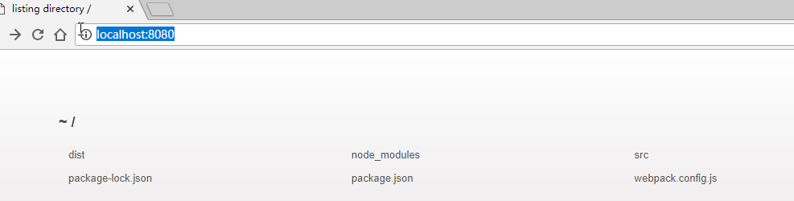
我们需要点击src才能看到index.html（访问src，默认访问到index.html）
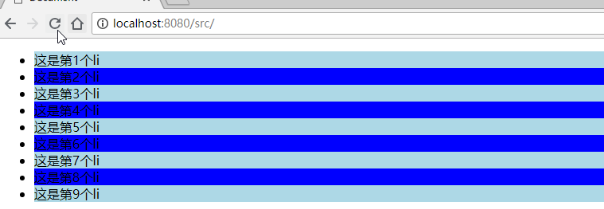
我们现在想访问localhost:8080之后直接看到index.html，怎么办？
预览界面设置：html-webpack-plugin就是生成预览界面的插件
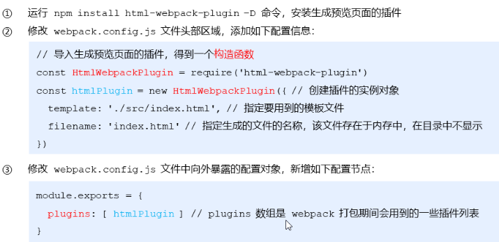
具体配置代码（可以复制）
xxxxxxxxxxA.安装默认预览功能的包:html-webpack-pluginnpm install html-webpack-plugin -DB.修改webpack.config.js文件，如下：//导入包const HtmlWebpackPlugin = require("html-webpack-plugin");//创建对象const htmlPlugin = new HtmlWebpackPlugin({//设置生成预览页面的模板文件template:"./src/index.html",//设置生成的预览页面名称filename:"index.html"})C.继续修改webpack.config.js文件，添加plugins信息：module.exports = {plugins:[ htmlPlugin ]}访问网址：localhost:8080，访问的就是生成的存在于内存的index.html
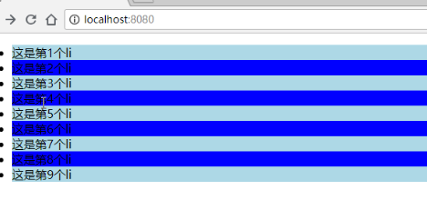
- 注意：其实这里的index.html会自动引入内存中根目录的bundle.js，所以可以给index.html的引入bundle.js屏蔽了
- 内存中的根目录的bundle.js是在webpack自动打包时生成的
3.4.4 配置自动打包相关的参数
问题：当我们执行完打包命令，需要手动访问localhost:8080才能看到首页，太麻烦
配置参数：以下配置为自动打开浏览器访问首页
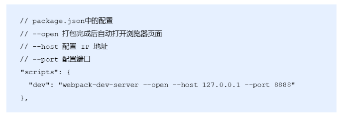
- ip一般是127.0.0.1，localhost
- port默认是8080，可以修改为8888
3.5 加载器
3.5.1 介绍加载器以及加载器的调用过程
通过loader打包非js文件
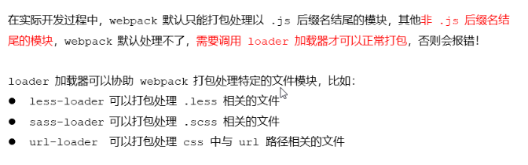
loader调用过程
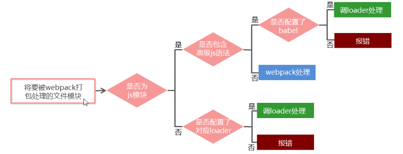
3.5.2 打包处理css文件
我们会依次介绍如何打包常见文件，常见文件如下：
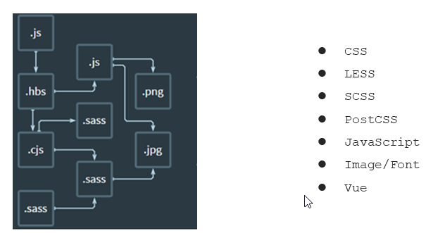
演示：
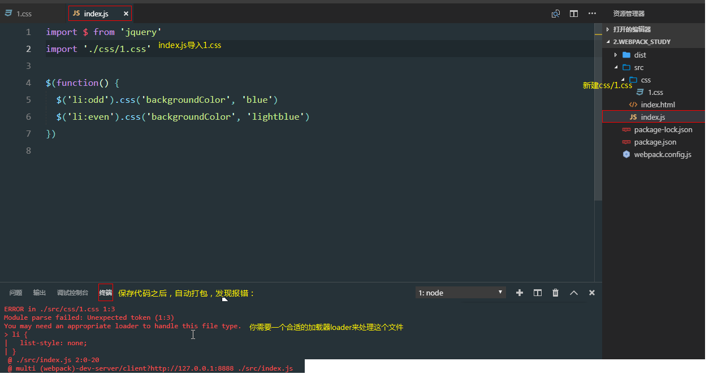
- css中：去掉li的小圆点：list-style:none
- index.js为啥要引入1.css？因为默认打包的是index.js，所以需要把1.css加入进去
为啥会报错，因为webpack默认只能打包js文件，要想打包其他文件，需要loader
如何打包css？
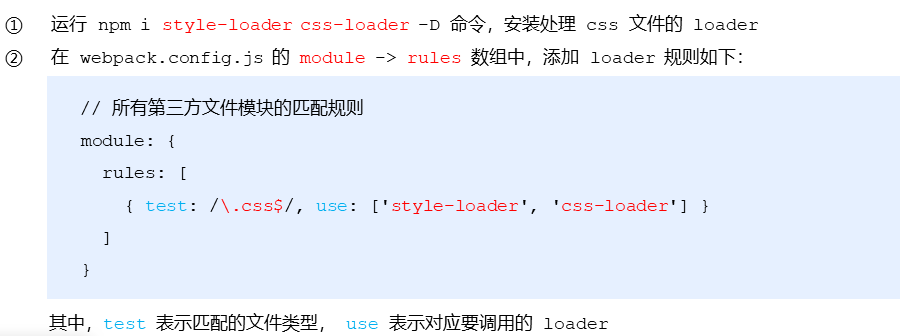
- rules：存放所有的loader规则
- test接收一个正则表达式//，这个正则表达式只需要匹配文件的后缀即可
- \.代表点，css$表示以css结尾，其实就是以.css结尾
- use接收一个数组，打包css文件，需要style-loader，和css-loader
配置之后，重新打包，最后访问：
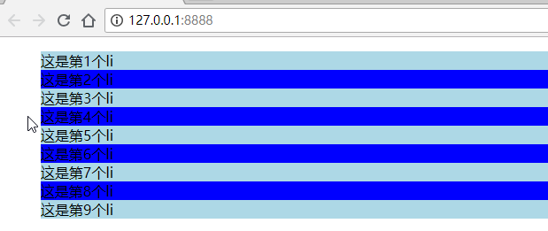
3.5.3 打包处理less文件
步骤
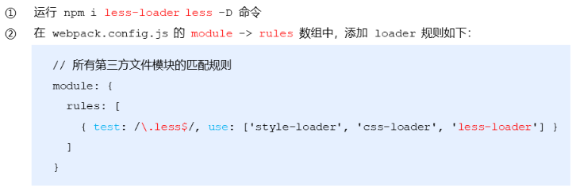
- less文件打包除了需要less-loader，也需要依赖style-loader,css-loader
代码：
xxxxxxxxxx//新建css/1.lessbody {margin: 0;padding: 0;ul {padding: 0;margin: 0;}}//index.jsimport './css/1.less'重新编译之后效果：
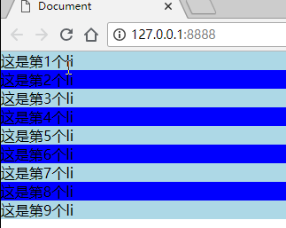
3.5.4 打包处理scss文件
步骤：
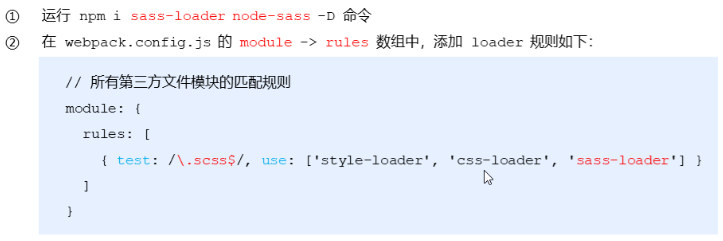
代码：
xxxxxxxxxx//新建css/1.scssul {font-size: 12px;li {line-height: 30px;}}//index.js引入import './css/1.scss'效果：
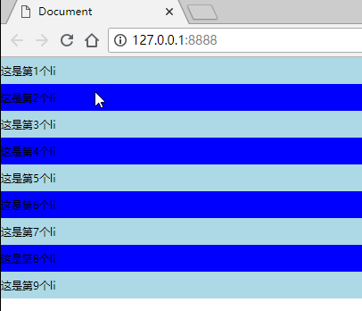
3.5.5 配置postCSS
配置postCSS自动添加css的兼容前缀
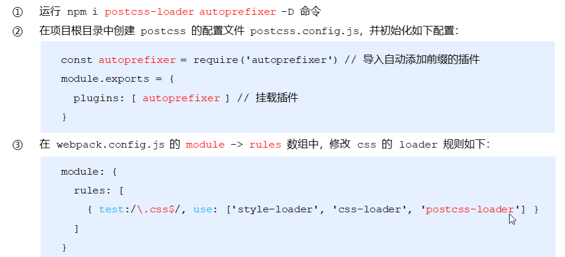
代码：
xxxxxxxxxx<!--index.htmlbody第一行添加--><input type="text" placeholder="ceshi" /><!--1.css中添加样式-->::placeholder {color: red;}效果：在谷歌和ie上都可以让 ceshi 文字变红
按理说，我们需要自己添加浏览器前缀，但是配置过postCSS之后，他会帮助我们添加浏览器前缀
3.5.6 打包样式表中的图片和字体文件
先来看一个问题：
代码中添加一张图片
xxxxxxxxxx#index.html<div id="box"></div>#1.css#box {width: 580px;height: 340px;background-color: pink;background: url('../images/1.jpg');}#增加图片：src/images/1.jpg访问页面，之前的样式全部丢失，说明打包失败
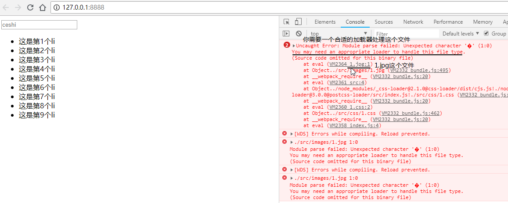
打包图片
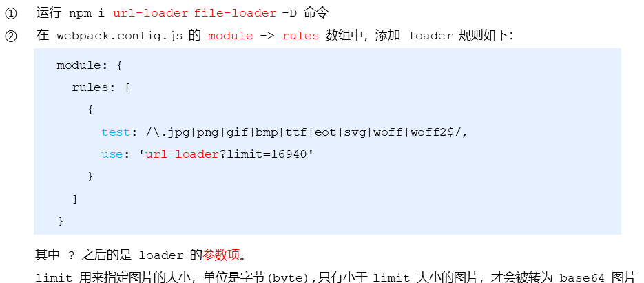
- use：可以接收loader数组，也可以接收一个loader名称（字符串）
- 图片大小，可以看一下1.jpg的属性
如果设置的limit大小与图片大小一样：图片路径就不会base64编码（limit大于等于图片大小不会编码）
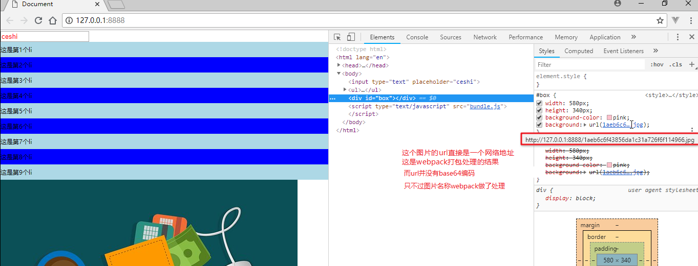
如果设置为16941：图片url就会base64编码（limit小于图片大小会编码）
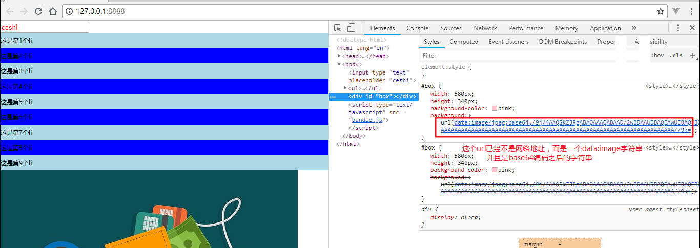
3.5.7 打包处理js文件中的高级语法
webpack只执行一部分的ES6新语法，他需要配合babel才可以完全支持ES6新语法
先来看问题：
代码：
xxxxxxxxxx#index.jsclass Person {static info = 'aaa'}console.log(Person.info)效果：webpack不能处理class这种ES6新特性
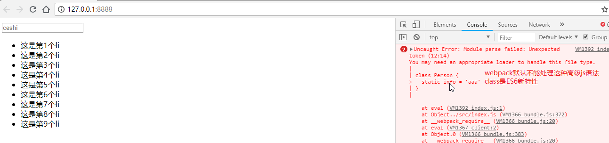
打包高级js语法
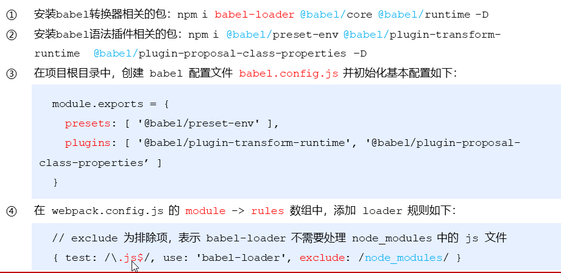
- node_modules是第三方提供的js代码，这些代码不需要webpack打包
- webpack只打包程序员自己的代码
效果：
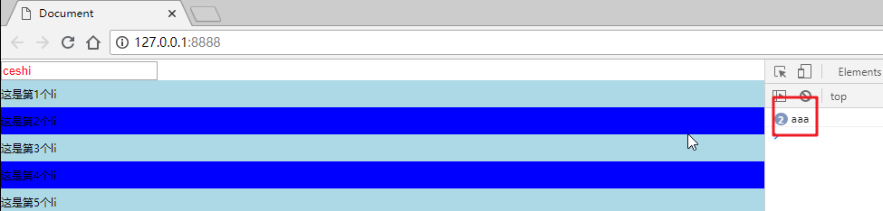
问题：为啥会打印两次aaa?
- 这是因为内存中的这个index.html会自动引入bundle.js
- 所以我们需要将index.html中的引入bundle.js给屏蔽掉，重新npm run dev即可
4. 单文件组件
4.1 单文件组件的组成结构
传统组件问题和解决方案
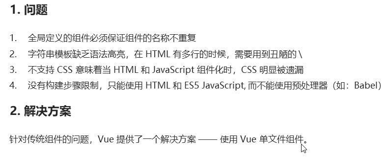
单文件组件的用法
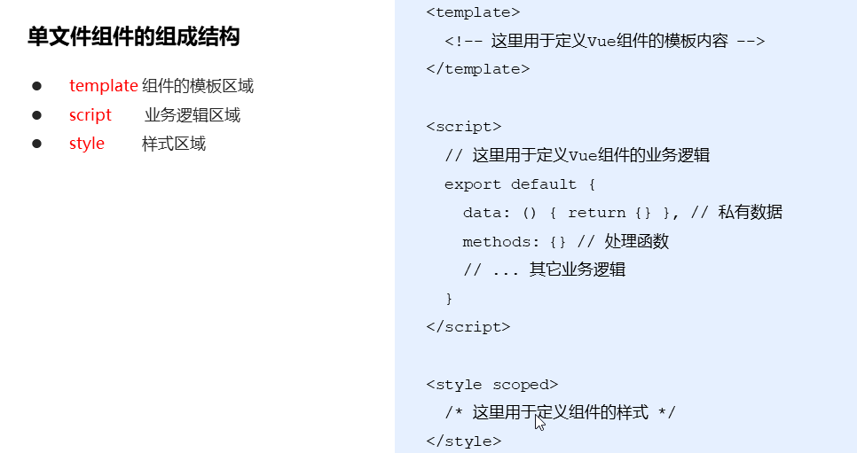
export default暴露对象数据
scoped：防止组件样式之间的冲突问题
- scope：区域，局部的意思
- style添加scoped就是私有样式，局部样式
代码：src/components/App.vue
xxxxxxxxxx<template><div><h1>这是 App 根组件</h1></div></template><script>export default {data() {return {};},methods: {}};</script><style scoped>h1 {color: red;}</style>vue文件的代码提示，可以在vscode中安装Vetur
4.2 配置.vue文件的loader加载器
先来看问题
- 代码
xxxxxxxxxx#index.js// 导入单文件组件import App from './components/App.vue'效果：
配置vue组件的加载器
安装之后，代码就不会报错，但是也没有任何效果，因为我们还没有正式使用vue代码
4.3 在webpack项目中使用vue
步骤
render: h => h(App)
代码：
xxxxxxxxxx#index.js最后添加如下代码// -----------------------------------------------import Vue from 'vue'// 导入单文件组件import App from './components/App.vue'const vm = new Vue({el: '#app',render: h => h(App)})#index.html最后添加如下代码<hr /><!-- 将来要被 vue 控制的区域 --><div id="app"></div>效果：
4.4 webpack打包发布
配置
- -p：打包参数，package：打包
删除dist目录(打包发布之后，会生成dist目录)
执行命令：npm run build
- 执行build命令，会执行webpack -p进行打包，而打包会参照webpack.config.js配置文件，查看入口和出口文件等等配置项
- 打包成功之后，会生成dist目录，bundle.js与index.html文件
我们访问dist/index.html效果：
5. vue脚手架
5.1 介绍并安装3.x版本的vue脚手架
脚手架基本用法介绍
- Vue脚手架： 用于快速生成 Vue 项目基础架构
- 理解：Vue脚手架，就是用于快速创建Vue项目的工具
- 官网：https://cli.vuejs.org/zh/guide/
安装
安装3.x版本的Vue脚手架
xxxxxxxxxxnpm install -g @vue/cli检验安装成功
xxxxxxxxxxvue -V#如果能提示脚手架的版本，则说明安装成功，例如版本为 3.3.0
5.2 基于交互式命令行创建新版vue项目
脚手架创建vue项目方式
- 重点掌握前两种，第三种是基于2.x创建旧版vue项目（图形化界面方式用的更多）
- my-project为项目名称，项目名称不能出现中文
创建项目步骤
创建项目
xxxxxxxxxx1.打开cmd2.执行：vue create vue-proj_01选择创建项目方式
- 这个界面是vue手脚架提供的项目初始化配置的界面（也就是交互式命令行界面）
- 上下键选择，回车确定
选择安装的功能
传智路由模式
选择linter模式
校验lint语法方式
选择配置文件
是否保存模板
创建项目
启动项目
启动成功
访问：(这个界面是vue脚手架默认提供的首页)
main.js中的代码（通过脚手架创建项目之后默认生成的代码）
xxxxxxxxxxVue.config.productionTip = falsenew Vue({router,render: h => h(App)}).$mount('#app')productionTip说明
$mount('#app')
- 这个其实相当于el:'#app'
- mount挂载，将vue挂载到id为app的标签上
5.3 基于图形化界面创建新版vue项目 ***
基于图形化界面创建项目步骤
执行命令：
xxxxxxxxxx#进入cmd执行：vue ui创建项目
选择目录
输入项目名称
配置选择
选择安装的功能
Linter/Formatter
- 用ESLINT或Prettier检查和加强代码质量
- 其实就是： 代码风格、格式校验
配置项
- lint 在保存时校验格式
保存配置信息

创建成功（看到项目管理界面）
项目管理器
任务
- 其他的功能，大家可以自己点击看看
- 可以在插件功能中管理插件
- 可以在配置功能中进行配置
查看项目首页（点击上图中的：启动app，按钮进入）
说明：vue-cli脚手架是整合了webpack打包工具
xxxxxxxxxxpackage.json中默认有启动项目的命令"scripts": {"serve": "vue-cli-service serve","build": "vue-cli-service build","lint": "vue-cli-service lint"},之前的使用了webpack的项目的启动命令"scripts": {"test": "echo \"Error: no test specified\" && exit 1","dev": "webpack-dev-server --open --host 127.0.0.1 --port 8888","build": "webpack -p"},
5.4 基于2.x的旧模板创建旧版vue项目
- 旧版方式不在详细说明（如在公司碰到，可观看视频）
5.5 分析项目结构
目录结构
真实目录
- assets和public都是存放静态文件，习惯在assets中存放字体图标和图片
- component：组件
- views：视图代码
- App.vue：根组件
- main.js：打包入口文件
- router.js：路由文件
- eslintrc.js：eslint配置文件
- .gitignore：git忽略文件
- babel.config.js：babel配置文件
- package.json：包管理配置文件
- postcss.config.js：postcss配置文件
问题：大家在新建项目之后，会发现没有router.js文件，而是有一个router文件夹，下边有一个index.js。这是因为vue和vue-router的版本不一致的原因
5.6 对vue脚手架项目进行自定义配置的两种方式
脚手架帮助我们做了很多配置
程序员有时候需要自定义配置
自定义配置两种方式
- 通过package.json配置项目（port端口，open打包完成之后自动打开浏览器）（不推荐方式）
单独配置文件配置项目（推荐方式）（意思就是要将自定义的配置要单独存放） ***
6. 组件库
6.1 介绍element-ui并基于命令行方式手动安装
介绍
- Element-UI：一套为开发者、设计师和产品经理准备的基于Vue 2.0的桌面端组件库
- 官网：https://element.eleme.cn/#/zh-CN
- Element-UI提供了丰富的组件，设计非常美观，我们可以直接拿来用，这样可以省去很多样式编写时间，让我们更加专注逻辑代码
命令行手动安装
- 将导入的ElementUI安装到Vue中，这样Vue才可以使用Element-UI
- 上述代码，写到打包入口文件：main.js
代码：
xxxxxxxxxx#main.jsimport Vue from 'vue'import App from './App.vue'import router from './router'// 手动配置 element-uiimport ElementUI from 'element-ui'import 'element-ui/lib/theme-chalk/index.css'Vue.use(ElementUI)Vue.config.productionTip = falsenew Vue({router,render: h => h(App)}).$mount('#app')#App.vue<template><div id="app"><!--增加如下代码，从Element-UI随便copy一些点代码（组件-Button中找如下代码）--><el-row><el-button>默认按钮</el-button><el-button type="primary">主要按钮</el-button><el-button type="success">成功按钮</el-button><el-button type="info">信息按钮</el-button><el-button type="warning">警告按钮</el-button><el-button type="danger">危险按钮</el-button></el-row><div id="nav"><router-link to="/">Home</router-link> |<router-link to="/about">About</router-link></div><router-view/></div></template>效果：
6.2 基于图形化界面自动安装element-ui
步骤：
打开图形化界面之后，创建项目，然后选择之前的配置模板
进入插件---添加插件，然后搜索，进行安装
- 选中vue-cli-plugin-element(单击即可)，然后点击右下角安装
安装成功之后，出现如下配置界面
- import on demand：按需导入
- demand：要求
文件改动（直接点击继续）
安装成功
通过vscode打开项目
main.js中导入了element.js（自动生成代码）
xxxxxxxxxximport './plugins/element.js'element.js中导入了Element-UI（自动生成代码）
x
import Vue from 'vue'import { Button,Row } from 'element-ui'Vue.use(Button)Vue.use(Row)老师的Element-UI插件版本与我们的不一致，所以他的没有注册Row不报错，咱们的就报错
报错如下：
App.vue中添加Element-UI代码（自己添加）
xxxxxxxxxx<template><div id="app"><!--添加如下代码--><el-row><el-button>默认按钮</el-button><el-button type="primary">主要按钮</el-button><el-button type="success">成功按钮</el-button><el-button type="info">信息按钮</el-button><el-button type="warning">警告按钮</el-button><el-button type="danger">危险按钮</el-button></el-row>....效果：